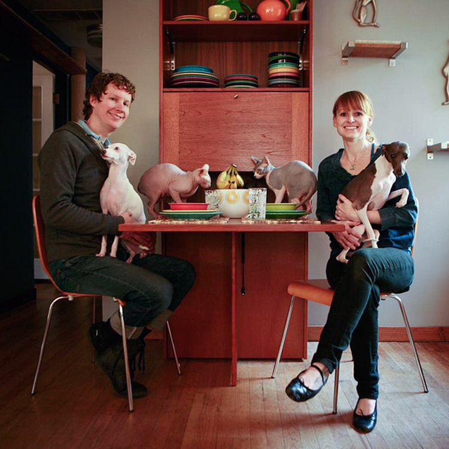

<?xml version="1.0" encoding="UTF-8"?>
<!DOCTYPE html PUBLIC "-//W3C//DTD XHTML 1.1//EN"
"http://www.w3.org/TR/xhtml11/DTD/xhtml11.dtd">
<html xmlns="http://www.w3.org/1999/xhtml" xml:lang="en" >
<head>
<meta http-equiv="Content-Type" content="text/html; charset=UTF-8" />
<TITLE>Modernist Cat: About Us</TITLE>


</html><!-- #BeginLibraryItem "/Library/metatags.lbi" -->
<META NAME="Description" CONTENT="Modernist Cat handcrafts pet furniture designed to combine a pet's needs with mid-century modern style.  We've engineered function and form into every detail to produce furniture-quality products that fit perfectly into contemporary homes.">
<META NAME="Author" CONTENT="modernistcat@gmail.com">
<META NAME="Keywords" CONTENT="Litter Box Furniture, Litter Box Enclosure, Litter Hider, Cat Litter Box, Cat Litter Box Cover, Cat Litter Cover, Modern Cat, Modern Cat Litter Box, Pet Furniture, Modern Pet Furniture, Modern Cat Furniture, Modern Cat Products, Modern Cat Litter Box Cover, Wooden Litter Box Cover, cat, cat furniture, cat house, modern cat, cat perch, catwalk, cat bed, cat condo, design, mid century, cat products, feline, cat scratcher, pet lover, sphynx, retro cat">


<script src="js/jquery-1.4.2.min.js"></script>
<script src="js/jquery.tools.min.js"></script>

<script src="js/jquery.scrollTo-1.4.2-min.js"></script>
<script src="js/jquery.localscroll-1.2.7-min.js"></script>
<!--</script><script type="text/javascript" src="js/jquery.ui.button.min.js"></script>	 -->
	<link rel="stylesheet" type="text/css" href="css/fonts/stylesheet.css"/>
    <link rel="stylesheet" type="text/css" href="css/modernist_cat_brown.css"/>	
    
<link rel="stylesheet" type="text/css" href="css/jquery.ui.button.css">
	<link rel="stylesheet" type="text/css" href="css/jquery-ui-1.8.1.custom.css">
    <link href='http://fonts.googleapis.com/css?family=Gudea' rel='stylesheet' type='text/css'>
    
  <script type="text/javascript">

  var _gaq = _gaq || [];
  _gaq.push(['_setAccount', 'UA-15944355-4']);
  _gaq.push(['_trackPageview']);

  (function() {
    var ga = document.createElement('script'); ga.type = 'text/javascript'; ga.async = true;
    ga.src = ('https:' == document.location.protocol ? 'https://ssl' : 'http://www') + '.google-analytics.com/ga.js';
    var s = document.getElementsByTagName('script')[0]; s.parentNode.insertBefore(ga, s);
  })();

    </script>  
    <script type="text/javascript" charset="utf-8">
try {
var pageTracker = _gat._getTracker("UA-123456-78");
var ref = document.referrer;
if (ref.search(/images.google/) != -1 && ref.search(/prev/) != -1) {
var regex = new RegExp("images.google.([^\/]+).*&prev=([^&]+)");
var match = regex.exec(ref);
pageTracker._clearOrganic();
pageTracker._addOrganic("images.google."+ match[1],"q");
pageTracker._setReferrerOverride("http://images.google." + match[1] + unescape(match[2]));
}
pageTracker._trackPageview();
} catch(err) {}
</script> <!-- #EndLibraryItem --><html xmlns="http://www.w3.org/1999/xhtml" xml:lang="en" ></head>

<body><!-- #BeginLibraryItem "/Library/Header.lbi" -->
<div class="header_bg"><div class="tagline_bg"><div class="main">
    <div class="header"><a href="/index.html"></a>
   
  <div class="tagline">
  <div class="contact"> <a href="contact.html">about us</a> | <a href="faq.html">FAQ's</a></div>
    </div></div><!-- end tagline 2-->
  
<!-- #EndLibraryItem --><div class="breadcrumb"><a href="index.html">Home</a> &gt; About Us</div>
 

        <!-- HTML structures -->
        <div class="left_col" id="contact" style="line-height:1.2">
        <h2>About Modernist Cat</h2>
       Modernist Cat is a pet furniture design studio based in Seattle, Washington.  Our work brings the Mid-Century Modern aesthetic into the realm of litter box covers and dual-purpose pet furniture.  
<br /><br />
All of our pieces can function as a litter box cover, beautiful hideaway, play area, or den.  Handcrafted from EuroPly with a hardwood veneer, each item is made to order and built to last.
 <br /><br /> 
Modernist Cat is committed to using eco-friendly materials in order to build products that minimize our environmental impact.  For example, our plywood is FSC certified and made with formaldehyde free glue. It is finished using a UV curing process that eliminates all volatile organic compounds (VOC’s).  We ship using recycled packing materials whenever possible.  
<br /><br />

 
<div class="family-photo"><a href="products.html"></a>
<div class="caption">Photo by <a href="http://bellabianco.com">Maria Christina Bianco</a></div><br />

</div> Modernist Cat is the hard work of Seattle artist <a href="http://www.wix.com/crygregory/petparentproject#">Crystal Gregory</a> with
modest help from her husband, their two Canadian Hairless cats,
Jackson & Elliott, and their two Italian Greyhounds, Lusi & Linus.
       
<br /><br /> <strong>Check out our House Tour on Apartment Therapy:</strong> <a href="http://www.apartmenttherapy.com/crystal-gavins-house-tour-146054">Crystal & Gavin's House Tour.</a>

</div>
<div class="right_col">
<div class="contact_box"><div class="contact_header">Get in touch:</div>
<div><a href="mailto:modernistcat@gmail.com">modernistcat@gmail.com</a></div>
<div>425.954.MEOW</div>
<div class="contact_header">Stay in touch:</div>
<div class="icons" style="padding-top:4px;">
<a href="http://www.facebook.com/pages/Seattle-WA/Modernist-Cat/115777068471250" title="Visit us on Facebook"></a>
<a href="https://twitter.com/ModernistCat" class="twitter-follow-button" data-show-count="false" title="Follow us on Twitter"></a>

</div>
<div class="contact_header">For your modern dog:</div>
<div class="urban-pet-link"><a href="http://www.etsy.com/shop/UrbanPet" title="Visit the Urban Pet Shop on Etsy"></a>

</ul></div>
</div>


</div><!-- end main -->
</div><!-- end tagline -->
</div>
<!-- end header --></body>
</html>
